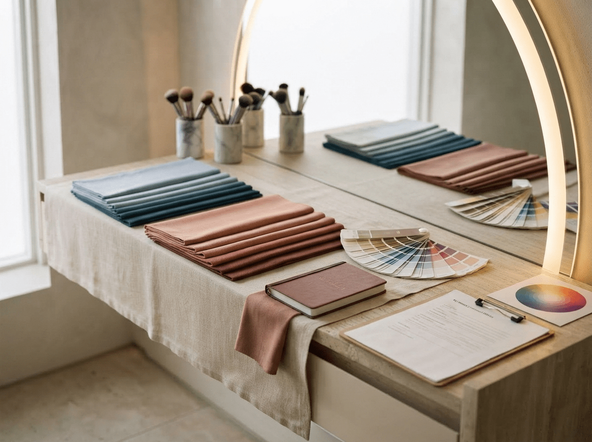
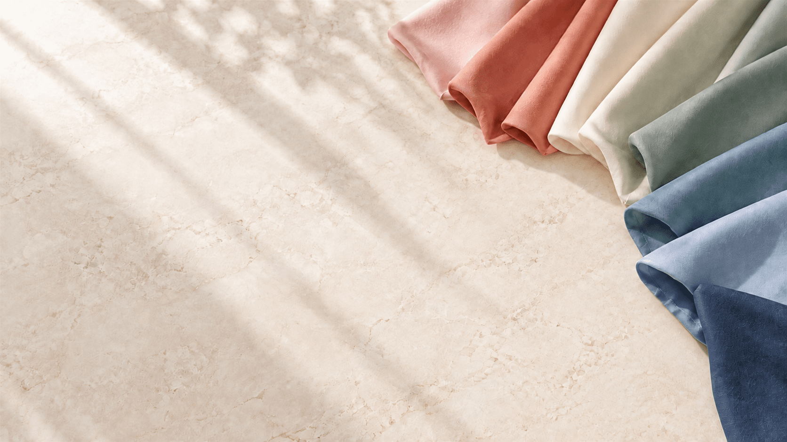

Spring
明るく、やさしく、可憐な色
PERSONAL COLOR ANALYSIS
似合う色が毎日をやさしく照らしてくれる。
自分らしい美しさを見つける、特別な90分を。
¥16,000 ／ 90分

パーソナルカラーは、見た目の印象だけでなく、気持ちまで明るくしてくれるもの。
あなたの個性を引き立て、毎日の選択が楽しくなるきっかけをお届けします。

ABOUT
生まれ持った肌・瞳・髪の色から、あなたの魅力を引き立てる色のグループを導き出す診断です。
似合う色を身につけることで、顔が明るく見え、表情がいきいきとします。
ファッション・メイク・ヘアカラーなど、毎日の選択がもっと楽しく、もっと自分らしくなるための大切なヒントをお届けします。
OUR APPROACH
色を通して心まで整うような時間を。
似合う色を診断するだけでなく、お一人おひとりの個性やライフスタイルに寄り添います。
FOUR SEASONS
それぞれの季節に美しさがある。
大切なのはあなたに似合うもの。
明るく、やさしく、可憐な色
やわらかく、上品で涼やかな色
深みのある、あたたかく落ち着いた色
クリアで鮮やか、透明感のある色
BEFORE YOUR VISIT
FAQ
薄めのメイクであれば問題ありません。
カウンセリングを含め約90分です。
ペア診断については事前にご相談ください。
FIND YOUR OWN COLORS
あなたの魅力を引き出す、特別な90分。